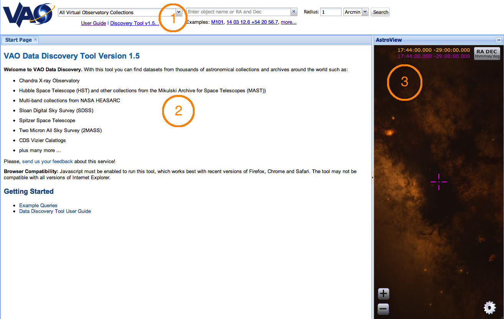
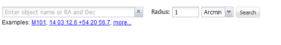
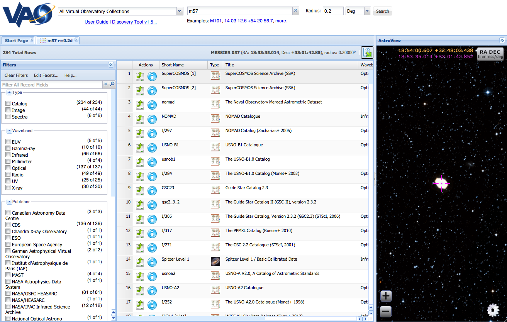
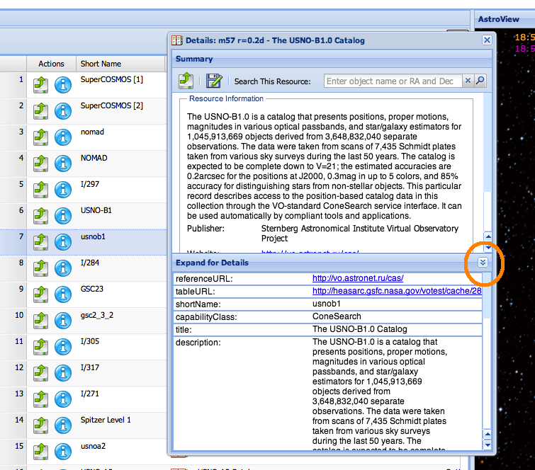
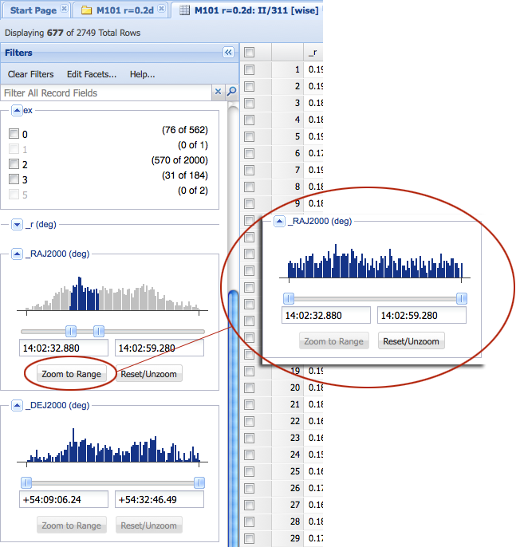
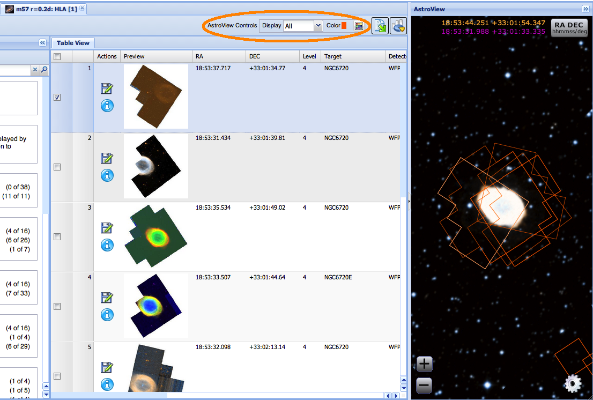

The USVAO Data Discovery Tool User Guide
Version
1.5
June 2013
Contents
- Introduction
- Initiating a Search
- Exploring Search Results
- Refining the Results with Filters
- Retrieving Results
- The AstroView Tool
- Tips & Notes
Introduction
The USVAO Data Discovery Tool (DDT) is a web application for searching repositories of Astronomical Images, Catalogs and Spectra.
|  | |
| Fig. 1—Anatomy of the Data Discovery Tool as it appears prior to the first search. Circled numbers in orange are keyed to descriptions in the text. | |
The initial screen layout consists of the following components, numbered as in Fig. 1:
- 1. Search Box and other high-level tools
- A hint appears describing the kind of query that should be performed. Also contains examples that populate the search box for you, a link to this guide and website information.
- 2. Data View Panel
- Presents data and images returned from the query or queries, sometimes allowing multiple views of a dataset, such as a grid layout or an album view. If filtering is available for the data panel, applicable filters are grouped into facets by semantic type, and will appear in this panel. Note that the Filters panel can be resized or (un)hidden using screen widgets. The initial view of data panel shows a welcome page.
- 3. AstroView Panel
- This powerful all-sky viewer provides visualization context and imagery for DDT queries, and can be navigated to any sky position.
Initiating a Search
All searches begin by entering either the name of an astronomical object, or the coordinates of a sky position in the search entry box in RA/Dec, sexagesimal or galactic coordinates (on the left in Fig. 2). The search can be initiated by clicking the Search button or by pressing the Return key on your keyboard while the cursor is in the search entry box.
|  | |
| Fig. 2—Search panel includes the Search box, radius selector, search button, and examples of valid search text. | |
Names of objects are passed to a name resolver, which associates known object names with sky coordinates. A wide variety of catalog and common names can be resolved to known objects. Coordinates can be given in a variety of formats; right ascensions must be positive and southern declinations require a leading negative sign. Examples of valid names and coordinate formats are given below.
| Object Names | |
|---|---|
| M101, NGC45 | Objects
from standard catalogs such as Messier and NGC |
| Antennae, Eta Carinae | Common names often work |
| T Tau | Variable star names often work |
| BD+19 706 | Star catalogs with coordinate symbols |
| png 000.8-07.6 | Other catalogs with coordinate and decimal symbols |
| 2MASS J04215943+1932063 | All-sky catalogs with coordinate symbols |
| TYC 1272-470-1 | All-sky satellite catalogs with restricted symbols |
| Coordinates | |
| 14 03 12.6 54 20 56.7 | Sexagesimal coordinates delimited with spaces |
| 14:03.210 54:20.945 | Sexagesimal coordinates delimited with colons; decimal minutes/arcminutes |
| 14h03m12.6s +54d20m56.7s | Sexagesimal coordinates with explicit hms/dms |
| g102.0373+59.7711 | Galactic coordinates of the form g[lon][+/-lat] with no spaces |
| 180.468 -18.866 | Coordinates in decimal degrees |
Objects from standard catalogs such as Messier and NGC will be resolved. Common names often work. Further rules and caveats for valid searches may be found in Tips & Notes.
Exploring Search Results
A successful search, such as that shown for M57 in Fig. 3 below, populates a new Search Results panel with a table of resources, a corresponding Filters panel applicable to these resources, and focuses the AstroView component on the position. The results of subsequent searches will be stored in new tables, accessed by clicking on the tabs at the top of the Results panel. To eliminate a results table (and discard the results for that search), click the "x" icon on the tab. Concurrent searches are possible; if a new search is initiated prior to the last one completing, a new tab will be created while the previous search continues. Just below the tabs is a status panel with the following items from left to right:
- coordinates and radius of the search
- number of rows retrieved so far
- status of searches in progress, including a button to load newly available results
- an Export Table As... button which can write the table of results to your local storage.
|  | |
| Fig. 3—Appearance of the DDT after a search for m57 within radius = .2 degrees, showing the filters (left panel) that can be applied to the Search Results (center panel), and the AstroView component. The results of a prior search/tab may be viewed by clicking the tab (labelled Start Page in this case) at the top of the Search Results panel. | |
Search Details Pop-Up
Clicking on the Info icon in any search result row pops up a Details Panel with summary information about the resource; clicking the double arrows at the bottom of this panel (labelled "Expand for Details") exposes all of the attributes for the resource. Additional buttons at the top of the Details Panel present various options which depend on the type of data described.
|  | |
| Fig. 4—Summary of an m57
resource, showing the summary description of the resource. Clicking the
double-arrow (circled) at the lower-right of the pop-up brings up all
available details. Different details panel formats exist based on what
is being viewed - resource information, an image, a catalog or spectra.
Sometimes the tool can only provide a generic view of the record. |
|
Loading Data from a Resource
Each
row in the inital
search results represents a data resource
that has either image, catalog or spectral data within the search
radius. After applying any desired filters to narrow the
results,
the
data for any resource can be loaded into the DDT by clicking the
Continue to Data button for that row.
The data from that resource will be loaded in a new result tab.
AstroView will render footprints and object positions for
Images
and
Catalog objects respectively.
Refining Results with Filters
Many searches, particularly on popular targets or of a sufficiently large area of sky, generate sometimes hundreds or even thousands of rows. The Filters panel allows the user to restrict the list of search results to those of most interest.
Facet Filters
The list of potential filters is quite large, and includes as many attributes of the matched data collections as the data providers offer. The filters in the panel are grouped into semantically related facets depending on the data. You can view the list of allowed facets by clicking the Edit Facets button at the top of the panel; select the desired facets by clicking the check-boxes in the pop-up window (middle) and clicking the Apply button. Note that not all facets are displayed or even available by default.
There are three types of filters:
- Discrete filters - Used for text and most integer-based facets (columns of data). A filter can be applied by clicking the check-box next to the desired facet values.
-
- A special discrete filter can exist when the data rows are selectable, allowing the user to choose whether to filter selected or unselected rows.
- Ranged sliders - Used for continuous numeric data, some integer data, and dates. Each facet presents the user with a histogram approximating the distribution of the data, a 2 handled slider for constraining endpoints, and a min/max box displaying the current endpoints, which also allows a user to manually type the desired endpoints. Some numeric facets are known to have certain values that represent a null or undefined entry, and the facet will alert the user that it is ignoring such a value.
- A search box, which allows regular expression matching by searching all records and columns of the data (even ones not visible in the display grid).
|  | ||
| Fig. 5— The search has been filtered by constraining the RA bounds. For example, only 76 of the rows where "ex" is 0 remain in the grid. Regular expressions may also be used as filters by entering a regular expression (usually just a word) in the dialog box near the top of the panel. In the numeric facet above, the data was recognized as RA coordinates and is presented in these boxes in sexagesimal format, but a user may define his or her own bounds using sexagesimal or degrees. Pressing the "Zoom to Range" button spreads the histogram out to cover only the originally selected range. | ||
Retrieving Results
A core capability of the DDT is to enable users to download resources, or to direct them to other desktop applications for analysis. As used here, resources is a rather generic term used to refer to individual data files (images, tables, and the like), or collections of them, or to services that provide data upon request. Any of these resources may be of use scientifically, and the DDT has simple mechanisms for retrieving them.
Tables
Downloading catalogs or tables is somewhat simpler than downloading images, in that any table displayed in the results panel may be saved with the following steps:
- Click the Export button at the top right of the table display.
- Select the output format and other parameters from the pop-up panel
- Click the Export button
Images and Spectra
For Image and
Spectral results,
click the Info icon in a
result row, the click the Download File icon  in
the details panel to retrieve the data file. The file can
also be
broadcast to other desktop applications by clicking on the Broadcast
icon
in
the details panel to retrieve the data file. The file can
also be
broadcast to other desktop applications by clicking on the Broadcast
icon  (see next section for more
information on
broadcasting, and how to broadcast table data).
(see next section for more
information on
broadcasting, and how to broadcast table data).
Broadcasting Data via SAMP
Many popular applications, including TOPCAT, Aladin, and DS9, have the ability to receive data from another similarly enabled desktop application . The DDT can broadcast a table, via the Simple Application Messaging Protocol (SAMP). The procedure is the same as downloading a table, except that instead of clicking Export as the last step, click the Broadcast button. Note that at least one other SAMP-enabled application, such as TOPCAT or Aladin must already be running in order for data to be transferred anywhere. When a table is broadcast (in this case, from the DDT to TOPCAT) for the first time during a session a security notification may appear.
Finally, note that the DDT does not currently support receiving broadcasts of data from other applications.
The AstroView Tool
The AstroView controls listed for each grid contain 3 components (circled in Fig. 6 below):
- Display - A toggle indicating which footprints are to be displayed
- Color - a swatch indicating the color of footprints associated with this search. Each search result is automatically assigned a new color to help distinguish its graphics from those of the previous searches. Clicking on the palette icon allows the user to select a new color for this search.
- Palette button - allows user to pick the color for this grid's footprints.
|  | ||
| Fig. 6—Footprints are from
images selected in the table view, then the AstroView controls, then
brought to the top in the AstroView display grid.. |
||
Additional controls are available within the AstroView panel itself:
- Zooming is
controlled both
by the scroll wheel and the
 and
and  buttons.
buttons. - The Settings
icon
 gives
access to
gives
access to - The RA/Dec position of the mouse is updated continuously at the top.
- Clicking on a position sets a magenta crosshair at that position, and displays the position in selectable magenta text near the top.
- Clicking the
RA DEC button
 near
the top toggles the RA/Dec displays between sexagesimal and decimal
degrees.
near
the top toggles the RA/Dec displays between sexagesimal and decimal
degrees.
Scatter Plots
Tips & Notes
When formulating a search, note the following:
- Leading zeros are ignored in the name. For example, M5 returns results for object Messier 005.
- Object names are not case-sensitive, and spaces between the characters (e.g. M51 and M 51) are ignored unless the space indicates a real character in the name.
- If an object name is incomplete the name resolvers from NED and SIMBAD return the closest match. This can lead to surprising results however.
- All coordinates are interpreted as J2000.
- Maximum search radius is limited on a collection-by-collection basis.
- Queries are currently limited to a single object or position. However, multiple queries may be submitted sequentially, even if one or more queries are still executing.
When downloading an image, note the following:
- Large images may take a while to download. Progress can be monitored using browser tools.
- Downloading is disabled for data products that are embargoed by the provider. It may not be obvious when this happens, except that no file will be downloaded to your computer.
When downloading a table, note the following:
- The Export button refers to the currently visible table, and not to a selected row within the table.
When broadcasting a table, note the following:
- At least one other SAMP-enabled application, such as TOPCAT or Aladin must already be running in order for data to be sent anywhere.
- The DDT cannot currently receive data sent from other applications.
Tabs of search results are not saved between sessions; once the application has been abandoned, returning to it will not bring up previously searched objects.
User feedback on this tool is welcome and encouraged! Contact the VAO.
Last modified: June 1, 2013